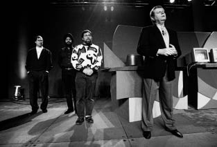

Restorasyon
Çünkü Şimdi Kaybeden İleride Kazanacak

Amelio Wozniak’ı çağırırken Jobs geride duruyor, 1997
Sahne Arkasında Takılmak
“30’lu ya da 40’lı yaşlardaki bir sanatçının gerçekten muhteşem bir eser sunabilmesi nadirdir,” demişti Jobs, otuz yaşına basmak üzereyken.
Bu söz Jobs’ın otuzlu yaşları, 1985’te Apple’dan kovulmasıyla başlayan on yıl için geçerli oldu. Ama 1995’te kırk yaşına bastıktan sonra yıldızı parladı. O yıl Oyuncak Hikayesi gösterime girdi, ertesi yılsa Apple’ın NeXT’i satın alması Jobs’ın kurduğu şirkete geri dönebilmesini sağladı. Jobs Apple’a geri dönünce, kırkını geçmiş insanların da son derece yaratıcı olabileceklerini kanıtlayacaktı. Yirmili yaşlardayken kişisel bilgisayarlarda çığır açtıktan sonra şimdi aynı şeyi müzik çalarlar, müzik endüstrisinin iş modeli, cep telefonları, uygulamalar, tablet bilgisayarlar, kitaplar ve gazetecilik için yapacaktı.
Larry Ellison’a geri dönüş stratejisinin NeXT’i Apple’a satmak, yönetim kuruluna alınmak ve Amelio’nun hata yapmasını beklemek olduğunu söylemişti. Jobs’ın hedefinin para olmadığını söylemesi Ellison’ı şaşırtmış olabilirdi. Ama bu kısmen doğruydu. Jobs ne Ellison’ın bariz tüketim ihtiyacına, ne Bill Gates’in hayırseverlik dürtüsüne, ne de Forbes listesinde yükselme arzusuna sahipti. Onun kişisel güdülerini tatmin edecek şey insanlara hayran kalacakları bir miras bırakmaktan geçiyordu. Aslında iki miras: yenilikçi ve çığır açıcı, muhteşem ürünler yaratmak ve kalıcı bir şirket kurmak. Edwin Land, Bill Hewlett ve David Packard gibi insanlarla aynı seviyede –hatta onlardan biraz yukarıda– olmak istiyordu. Bütün bunları yapmasının en iyi yoluysa Apple’a geri dönüp krallığını geri almasıydı.
Ama yine de... restorasyon zamanı gelince tuhaf bir çekingenlik sergiledi. Çekindiği şey Gil Amelio’nun kuyusunu kazmak değildi. Bu doğasında vardı ve Amelio’nun ne yaptığını bilmediğine karar verdikten sonra öyle davranmaması güçtü. Ama iktidar kadehi dudaklarına yaklaştıkça tuhaf bir tereddüte, hatta gönülsüzlüğe kapılacak, belki de naz yapacaktı.
Ocak 1997’de gayriresmî bir yarı zamanlı danışman olarak geri döndü, Amelio’ya söylediği gibi. Personelle ilgili bazı konularda, özellikle de NeXT’ten gelen adamlarını korumakta ağırlığını koydu. Ama başka pek çok konuda tuhaf bir şekilde pasifti. Yönetim kuruluna katılmasının teklif edilmemesine karar verilmesine gücendi ve şirketin işletim sistemi bölümünün başına geçmesinin önerilmesini aşağılayıcı buldu. Amelio Jobs’ı çadırın hem içinde, hem de dışında bırakan bir durum yaratmıştı ve eninde sonunda sorun çıkması kaçınılmazdı. Jobs sonradan şöyle anımsıyordu:
Gil beni ayak altında istemiyordu. Ben de onun andaval olduğunu düşünüyordum. Öyle olduğunu şirketi ona satmadan önce de biliyordum. En fazla arada sırada bazı etkinliklere, örneğin Macworld’ünkilere, temelde şov için gönderileceğimi düşünüyordum. Bu bana uyardı, çünkü Pixar’da çalışıyordum. Palo Alto’nun merkezinde, haftada birkaç gün çalışabileceğim bir ofis kiraladım; haftada bir iki gün de Pixar’a gidiyordum. Güzel bir hayattı. Koşuşturmuyordum, aileme zaman ayırabiliyordum.
Jobs sahiden de Ocak başında bir Macworld etkinliğine gönderildi ve Amelio’nun andaval olduğu kanısı pekişti. 4.000’e yakın sadık hayran, Amelio’nun açılış konuşmasını dinlemek için San Francisco Marriott’un balo salonundaki koltukların biletlerini kapışmışlardı. Onu Bağımsızlık Günü filminde dünyayı bir Apple PowerBook kullanarak kurtarmış olan aktör Jeff Goldblum takdim etti. “Kayıp Dünya: Jurassic Park’ta bir kaos kuramı uzmanını oynuyorum,” dedi. “Bu bir Apple etkinliğinde konuşmama yeter sanırım.” Sonra mikrofonu sahneye gelen Amelio’ya bıraktı; Amelio göz alıcı bir spor ceket giymişti ve çizgili yakasının düğmesini sımsıkı iliklemişti – “Vegas karikatürlerindeki tipler gibiydi,” dedi Wall Street Journal muhabiri Jim Carlton sonradan; teknoloji yazarı Michael Malone ise “yeni boşanmış amcanızın ilk kez bir kadınla çıkacağı geceki hali gibiydi aynen” dedi.
Daha büyük bir sorun şuydu ki, Amelio etkinlikten hemen önce tatile çıkmış, dönüşte konuşma yazarlarıyla şiddetli bir tartışma yaşamış ve prova yapmayı reddetmişti. Jobs sahne arkasına gelince kaostan rahatsız oldu; Amelio podyumda dağınık ve sonu gelmez bir sunum yaparken Jobs öfkeden köpürdü. Optik suflöründe beliren konuşma konularından pek anlamayan Amelio, kısa süre sonra doğaçlama yapmaya girişti. Düşünce zincirini defalarca yitirdi. Bir saatten fazla zaman geçtiğinde, seyirciler artık afallamış haldeydi. Birkaç ara verilmesi, örneğin Amelio’nun yeni bir müzik programını sergilemek için şarkıcı Peter Gabriel’i sahneye getirmesi herkesi rahatlattı. Amelio ilk sırada oturan Muhammed Ali’yi de gösterdi; Ali’nin Parkinson hastalığıyla ilgili bir web sitesini tanıtmak için sahneye gelmesi gerekiyordu, ama Amelio onu çağırmadı ve orada bulunmasının sebebini açıklamadı.
Amelio iki saatten fazla lafı dolandırdıktan sonra sahneye herkesin tezahürat yapmayı beklediği kişiyi çağırdı nihayet. “Jobs sahneye özgüveniyle, stiliyle ve çekim gücüyle çıkarken, beceriksiz Amelio’nun tam tersiydi,” diye yazdı Carlton. “Elvis’in geri dönmesi bile daha büyük bir heyecan uyandıramazdı.” Kalabalıktakiler ayağa fırladılar ve onu bir dakikadan fazla çılgınca alkışladılar. Sürgünde geçen on yıl nihayet sona ermişti. Jobs sonunda el sallayarak kalabalığı susturdu ve meselenin özüne indi. “Parıltıyı geri getirmeliyiz,” dedi. “Mac on yılda pek gelişmedi. Bu yüzden Windows ona yetişti. Dolayısıyla bizim daha da iyi bir işletim sistemi yaratmamız gerek.”
Jobs’ın moral konuşması Amelio’nun korkutucu performansını telafi eden bir final olabilirdi. Ne yazık ki Amelio sahneye geri döndü ve tam yarım saat boyunca abuk sabuk konuşmayı sürdürdü. Sonunda, şov başlayalı üç saati geçmişken, Amelio son olarak Jobs’ı sahneye geri çağırdı ve ardından Steve Wozniak’ı da getirdi sürpriz bir şekilde. Yine kıyamet koptu. Ama Jobs’ın sinirlendiği belliydi. Üçünün birlikte kollarını muzafferce kaldırmaları sahnesinden kaçındı. Bunun yerine yavaş yavaş, çaktırmadan sahneden çıktı. “Planladığım kapanış anını acımasızca mahvetti,” diye yakındı Amelio sonradan. “Kendi hislerini Apple’ın basında iyi bir şekilde yer almasının önünde tutuyordu.” Olay çıkacağı daha Apple’ın yeni senesinin ilk haftasında belli olmuştu.
Jobs güvendiği insanları Apple’daki en üst konumlara yerleştirmeye girişti hemen. “NeXT’ten gelen gerçekten becerikli insanların, daha beceriksiz olan Apple üst düzey yöneticileri tarafından sırtlarından bıçaklanmalarını engellemek istiyordum,” diye anımsıyordu. NeXT yerine Sun’a ait Solaris’in yeğlenmesini savunmuş olan Ellen Hancock Jobs’ın andaval listesinin başında yer alıyordu, özellikle de yeni Apple işletim sisteminde Solaris’in çekirdeğinin kullanılmasını istemeyi sürdürmesi yüzünden. Hancock Jobs’ın bu kararda oynayacağı rolü soran bir muhabire kısaca yanıt verdi: “Rol oynamayacak.” Yanılıyordu. Jobs’ın ilk hamlesi, NeXT’ten iki arkadaşını Hancock’un yerine geçirmek oldu.
Yazılım mühendisliğinin başına arkadaşı Avie Tevanian’ı getirdi. Donanım bölümünün başınaysa, NeXT’in eski donanım bölümünü yöneten Jon Rubinstein’ı getirdi. Rubinstein Jobs aradığında Skye Adası’nda tatil yapıyordu. “Apple’ın biraz yardıma ihtiyacı var,” dedi Jobs. “Gelmek ister misin?” Rubenstein istiyordu. Macworld etkinliğine katıldı ve Amelio’nun sahnedeki beceriksizliğine tanık oldu. İşler tahmininden de kötüydü. O ve Tevanian toplantılarda tımarhaneye düşmüşçesine bakışıyorlardı; insanlar abuk sabuk laflar ederken Amelio masanın ucunda uyuşmuşçasına oturuyordu.
Jobs ofise düzenli olarak gelmiyordu, ama Amelio’yla sık sık telefonla konuşuyordu. Tevanian’ı, Rubenstein’ı ve güvendiği diğer insanları üst konumlara yerleştirdikten sonra ürün gruplarında odaklandı. Sinir olduğu şeylerden biri el yazısını tanıyabilen, elde taşınabilen kişisel dijital asistan Newton’dı. Bu cihaz fıkralarda ve Doonesbury karikatürlerinde sergilendiği kadar kötü olmasa da, Jobs ondan nefret ediyordu. Ekrana stilusla ya da kalemle yazma fikrinden hoşlanmıyordu. “Tanrı bize on tane stilus vermiş zaten,” diyordu parmaklarını sallayarak. “Yenisini icat etmenin lüzumu yok.” Ayrıca Jobs Newton’ı John Sculley’nin tek büyük icadı, özel projesi olarak görüyordu. Sevmemesi için yeterliydi bu.
“Newton’ı bitirmelisin,” dedi bir gün Amelio’ya telefonda.
Amelio durup dururken yapılan bu öneriye direndi. “Ne demek bitir?” dedi. “Steve, bunun bize ne kadar pahalıya patlayacağından haberin var mı?”
“Yani diyorum ki iptal et, üretimini durdur, kurtul ondan,” dedi Jobs. “Maliyeti önemli değil. Ondan kurtulursan insanlar sevinir.”
“Ben Newton’ı inceledim, para basacak,” dedi Amelio. “Üretiminin durdurulmasını desteklemiyorum.” Ama Mayıs’ta Newton bölümünü küçülterek, bir yıl sonra iptal edilmesiyle sonlanacak süreci başlatmış oldu.
Tevanian’la Rubinstein Jobs’ı olup bitenler hakkında bilgilendirmek için evine gidiyorlardı ve Silikon Vadisi’ndeki çoğu insan Jobs’ın Amelio’nun iktidarını azar azar elinden aldığını kısa sürede öğrendi. Jobs makyavelist bir iktidar mücadelesine girişmekten çok kendi doğasına uygun davranıyordu sadece. Kontrol sahibi olmayı arzulamak hamurunda vardı. Aralık’ta yapılan açıklamada bunu öngörüp Jobs’la Amelio’yu sorgulamış olan Financial Times muhabiri Louise Kehoe haberi ilk yapan kişi oldu. “Bay Jobs tahtın ardındaki güce dönüştü,” diye yazdı Şubat sonunda. “Apple’ın operasyonlarının hangilerinin iptal edilmesi gerektiğine onun karar verdiği söyleniyor. Bay Jobs Apple’daki eski iş arkadaşlarından bazılarını şirkete geri çağırdı ve söylediklerine göre başa geçmeyi planladığını açıkça ima etti. Bay Jobs, bayan sırdaşlarından birinin söylediğine göre, Bay Amelio’yla atadığı kişilerin Apple’ı canlandırmakta başarılı olamayacaklarına karar verdi ve ‘şirketinin’ kurtulmasını garantilemek için onların yerine geçmeyi kafaya koydu.”
Amelio’nun o ayki yıllık hissedarlar toplantısında 1996’nın son çeyreğinde satışların neden geçen seneye kıyasla %30 azaldığını açıklaması gerekiyordu. Hissedarlar öfkelerini mikrofonlarla konuşarak dile getirdiler. Amelio o toplantıyı ne kadar kötü yönettiğinden habersizdi. “Yaptığım konuşma gelmiş geçmiş en iyi konuşmalarımdan biri olarak görüldü,” diye böbürlendi sonradan. Ama DuPont’un eski CEO’su olan Apple yönetim kurulu başkanı Ed Woolard (Markkula başkan yardımcılığına indirilmişti) afallamıştı. “Bu bir felaket,” diye fısıldadı karısı ona toplantının ortasında. Woolard hemfikirdi. “Gil iki dirhem bir çekirdek giyinmişti, ama salak gibi görünüyor ve konuşuyordu,” diye anımsıyordu. “Soruları yanıtlayamıyordu, ne dediğini bilmiyordu ve hiç güven uyandırmıyordu.”
Woolard Jobs’ı aradı; onunla tanışmıyordu. Onu DuPont yöneticileriyle tanıştırma bahanesiyle Delaware’e davet etti. Jobs daveti reddetti, ama Woolard’ın hatırladığına göre “bu davet onunla Gil hakkında konuşmam için bir bahaneydi.” Woolard konuşmayı bu yöne çekti ve Jobs’a Amelio hakkında ne düşündüğünü sordu pat diye. Woolard Jobs’ın biraz ihtiyatlı davrandığını, Amelio’nun yaptığı işin ona uygun olmadığını söylediğini anımsıyor. Jobs ise daha dobra konuştuğunu anımsıyor:
Düşündüm ki ya ona gerçeği, yani Gil’in andaval olduğunu söylerim, ya da bir şey dememekle yalan söylemiş olurum. Sonuçta karşımdaki adam Apple yönetim kurulunda ve ona fikrimi söylemek görevim; öte yandan fikrimi söylersem Gil’e söyler ve bu durumda Gil beni bir daha asla dinlemez ve Apple’a getirdiğim insanlarla uğraşır. Bütün bunlar otuz saniyeden kısa sürede aklımdan geçti. Sonunda bu adama gerçeği söylememin boynumun borcu olduğuna karar verdim. Apple’ı çok önemsiyordum. Bu yüzden ona gerçeği söyledim. O herifin hayatımda gördüğüm en kötü CEO olduğunu, CEO’luk için lisans gerekse alamayacağını söyledim. Telefonu kapatınca “Bu yaptığım cidden salakça bir şeydi herhalde,” diye düşündüm.
O baharda Oracle’dan Larry Ellison bir partide Amelio’yu gördü ve teknoloji muhabiri Gina Smith’le tanıştırdı; Smith Apple’ın durumunu sordu. “Bilirsin Gina, Apple gemi gibidir,” diye karşılık verdi Amelio. “O gemi hazine yüklü, ama gemide bir delik var. Benim işim herkesin aynı yönde kürek çekmesini sağlamak.” Şaşırmış görünen Smith “İyi ama delik ne olacak?” diye sordu. O zamandan sonra Ellison’la Jobs bu gemi “meseliyle” dalga geçtiler. “Larry bana bu öyküyü anlattığında bir suşi mekânındaydık ve gülmekten yere yuvarlandım resmen,” diye anımsıyor Jobs. “Amelio gerzeğin tekiydi ve kendini çok ciddiye alıyordu. Herkesin ona Dr. Amelio demesinde ısrar ediyordu. Bu her zaman bir uyarı işaretidir.”
Fortune’un geniş çevreli teknoloji muhabiri Brent Schlender Jobs’ı ve düşünce tarzını tanıyordu; Mart’ta o karmaşık durumla ilgili bir yazı yazdı. “Silikon Vadisi’nin kötü yönetim ve boşa çıkan teknoloji hayalleri abidesi Apple Computer kriz moduna geri döndü ve azalan satışlarla, teknoloji stratejisinin başarısızlığıyla ve marka adının kan kaybetmesiyle başa çıkmak için kasvetle, ağır çekim çırpınıyor,” diye yazdı. “Makyavelist birine, Jobs Hollywood’un cazibesine karşın –Oyuncak Hikayesi gibi bilgisayar animasyonlu filmler hazırlayan Pixar’ı yönetiyor son zamanlarda– Apple’ı ele geçirme planları kuruyor gibi gelebilir.”
Ellison saldırgan iktisaba başvurup “en iyi arkadaşı” Jobs’ı CEO yapma fikrini bir kez daha açıkça ifade etti. “Apple’ı kurtarabilecek tek insan Steve,” dedi Ellison muhabirlere. “Ne zaman isterse ona anında yardım etmeye hazırım.” Üçüncü kez kurt geldi diye bağırınca kimseyi inandıramayan masal karakteri çocuk gibi, Ellison da iktisapla ilgili son sözlerinin pek dikkat çekmediğini gördü; bunun üzerine o ay daha sonra San Jose Mercury News’ten Dan Gillmor’a Apple’ın çoğunluk hisselerini satın almak için 1 milyar dolar toplamak üzere bir yatırımcı grubu oluşturduğunu söyledi. (Şirketin piyasa değeri 2,3 milyar dolar civarıydı.) Bu haberin çıktığı gün Apple hisselerinin değeri %11 arttı. Ellison daha da ileri gidip iyice cıvıyarak bir e-posta adresi –savapple@us.oracle.com– aldı ve planını uygulayıp uygulamaması konusunda halk oylaması yapılmasını istedi. (Ellison başta “saveapple”[27] adresini almak istemişti, ama sonra şirketinin e-posta sisteminde sekiz karakter sınırı olduğunu keşfetmişti.)
Ellison’ın kendi kendine soyunduğu bu rolü biraz eğlenceli bulan Jobs, nasıl değerlendireceğini bilemediğinden bu konuyu konuşmaktan kaçınmayı yeğledi. “Larry arada sırada bu konuyu açıyor,” dedi bir muhabire. “Ona Apple’da danışmanlık yapacağımı açıklamaya çalışıyorum.” Amelio ise çok sinirlendi. Ellison’ı azarlamak için aradı, ama Ellison telefona çıkmadı. Amelio bunun üzerine Jobs’ı aradı; Jobs ona belirsiz ama yarı samimi bir karşılık verdi. “Olanları cidden anlamıyorum,” dedi Amelio’ya. “Bence bütün bunlar delilik.” Sonra yarı samimi bile olmayan bir güvence verdi. “Seninle benim aramızda iyi bir iletişim var,” dedi. Jobs Ellison’ın fikrini yazılı bir açıklamayla reddederek spekülasyonlara son verebilirdi. Ama bunu yapmayarak Amelio’nun epey canını sıktı. Tarafsız kalmayı sürdürdü; bu hem çıkarlarına, hem de doğasına uygundu.
Amelio’nun daha büyük sorunu, dinlemesini bilen dobra ve sağduyulu bir endüstri mühendisi olan yönetim kurulu başkanı Ed Woolard’ın desteğini yitirmiş olmasıydı. Woolard’a Amelio’nun kusurlarından bahseden tek kişi Jobs değildi. Apple’ın baş mali işler sorumlusu Fred Anderson, Woolard’ı şirketin bankalarla anlaşmalarını çiğnemek ve iflas etmek üzere olduğu ve moralin giderek düştüğü konusunda uyardı. Mart’taki yönetim kurulu toplantısında diğer yöneticiler huysuzlandılar ve Amelio’nun önerdiği reklam bütçesini oylamayla reddettiler.
Basın da Amelio’ya düşman olmuştu. Business Week’te çıkan bir yazıda “Apple’ın İşi Bitti Mi?” sorusu soruluyordu, Red Herring’in bir başyazısının başlığı “Gil Amelio, Lütfen İstifa Et”ti, Wired’ın kapağındaysa Apple logosuna dikenli taç takılmıştı ve “Dua Edin” başlığı atılmıştı. Boston Globe’dan Mike Barnacle Apple’ın yıllardır kötü yönetilmesini eleştirdi: “Bu salaklar insanları ürkütmeyen tek bilgisayarı devralıp da Red Sox beyzbol takımının 1997’deki yedek atıcılarının teknoloji dünyasındaki karşılığına dönüştürmüşken hâlâ nasıl maaş alabiliyorlar?” Mayıs sonunda Wall Street Journal’dan Jim Carlton, Amelio’yla röportaj yaptı; Amelio’nun Apple’ın bir “ölüm spiralinde” olduğu algısını değiştirip değiştiremeyeceğini sordu. Amelio Carlton’un gözlerinin içine bakıp “Ne desem bilmiyorum ki,” karşılığını verdi.
Jobs’la Amelio Şubat’ta sözleşme imzaladıklarında, Jobs çok sevinmiş ve “Bunu kutlamak için çıkıp muhteşem bir şişe şarap içmeliyiz!” demişti. Amelio kendi mahzeninden şarap getirmeyi teklif etmiş ve eşleriyle birlikte içmelerini önermişti. Ancak Haziran’da tarih belirleyebildiler ve artan gerilime karşın iyi zaman geçirebildiler. Yemeklerle şarap, sofradaki kişiler kadar uyumsuzdu; Amelio her biri 300 dolar civarında olan bir şişe 1964 Cheval Blanc’la bir Montrachet getirmişti, oysa Jobs’ın seçtiği, Redwood City’deki vejetaryen restoranında gelen hesap 72 dolardı. Amelio’nun karısı sonradan “Steve çok hoş bir insan, karısı da öyle,” dedi.
Jobs istediğinde insanları etkileyip gözlerine girebiliyordu ve bunu yapmaktan hoşlanıyordu. Amelio’yla Sculley gibi insanlar Jobs’ın onlara iyi davranmasının onlardan hoşlandığı ve saygı duyduğu anlamına geldiğine inanmayı yeğlediler. Jobs ilgiye aç insanlara yağ çekerek bu izlenimi güçlendirirdi bazen. Ama nasıl hoşlandığı insanlara kolayca hakaret edebiliyorsa, nefret ettiği insanların da gözüne kolayca girebiliyordu. Amelio bunu fark etmedi çünkü Sculley gibi o da Jobs’ın sevgisini kazanmaya can atıyordu. Hatta Jobs’la arasının iyi olmasını istediğinden bahsederken, neredeyse Sculley ile aynı şeyleri söyledi. “Steve’le bir sorunum olduğunda onunla yürüyüşe çıkıyordum,” diye anımsıyordu Amelio. “Bunların onda dokuzunda uzlaşıyorduk.” Jobs’ın kendisine gerçekten saygı duyduğuna her nasılsa inanmıştı. “Steve’in zihninin sorunlara yaklaşım tarzına hayrandım ve karşılıklı güvene dayalı harika bir ilişki kurduğumuza inanıyordum.”
Amelio o akşam yemeğinden birkaç gün sonra gerçeği anladı. Pazarlıkları sırasında Amelio, Jobs’ın Apple hisselerini en az altı ay ve tercihen daha da uzun bir süre elinde tutmasında diretmişti. Haziran’da altı ay doldu. 1,5 milyon hisse satılınca Amelio Jobs’ı aradı. “Millete satılan hisselerin seninkiler olmadığını söylüyorum,” dedi. “Hatırlarsan bir anlaşma yapmıştık; hisselerini satmadan önce bize haber verecektin.”
“Doğru,” diye karşılık verdi Jobs. Amelio bu karşılıktan Jobs’ın kendi hisselerini satmadığı sonucunu çıkardı ve bunu yazıyla ilan etti. Ama A.B.D. SPK’sı işlem verilerini açıklandığında, Jobs’ın sahiden de hisselerini sattığı ortaya çıktı. “Lanet olsun Steve, sana hisselerini satıp satmadığını açıkça sordum, sen de satmadım dedin.” Jobs Amelio’ya hisselerini Apple’ın gidişatı konusunda “karamsarlığa kapıldığı” bir anda sattığını ve “biraz utandığı” için bunu itiraf edemediğini söyledi. Ona yıllar sonra sorduğumdaysa “Gil’e söylemem gerektiğini düşünmedim,” diye kestirip attı.
Jobs neden Amelio’ya hisselerini sattığını söylememişti peki? Sebeplerden biri basit: Jobs bazen gerçekleri söylemekten kaçınırdı. Helmut Sonnenfeld’in Henry Kissinger hakkında bir sözü vardır: “Çıkarlarına uygun olduğu için değil, mizacına uygun olduğu için yalan söylüyor.” Jobs’ın mizacında insanları yanlış yönlendirmek ve bazen, gerektiğini düşündüğünde ketum olmak vardı. Öte yandan bazen zalimce dobra da olabiliyordu, çoğumuzun allayıp pulladığı ya da gizlediği gerçekleri söylüyordu. Yalan söylemesi de, doğruyu söylemesi de normal kuralların kendisine işlemediği inancından kaynaklanan Nietszchevari yaklaşımının farklı yönleriydiler sadece.
Amelio Çıkar
Jobs, Larry Ellison’ı iktisap konusunda susturmayı reddetmişti ve kendi hisselerini gizlice satıp bu konuda yalan söylemişti. Dolayısıyla Amelio, onun kendisine düşman olduğuna nihayet ikna oldu. “Steve’in benim tarafımda olduğuna inanmaya fazla gönüllü, fazla hevesli olduğumu nihayet fark ettim,” diye anımsıyordu Amelio sonradan. “Steve kovulmama yönelik planlarını adım adım uyguluyordu.”
Jobs sahiden de Amelio’yu her fırsatta kötülüyordu. Kendini tutamıyordu, ayrıca eleştirilerinde haklıydı. Ama yönetim kurulunun Amelio’ya karşı tavır almasında daha önemli bir faktör etkili oldu. Baş mali işler sorumlusu Fred Anderson, Ed Woolard’la yönetim kurulunu Apple’ın durumunun kötülüğü konusunda bilgilendirmeyi görev bildi. “Fred bana paraların suyunu çektiğini, insanların şirketten ayrıldığını ve çok önemli bazı çalışanların da ayrılmayı düşündüğünü söyleyen kişiydi,” diyor Woolard. “Geminin çok yakında karaya oturacağını ve kendisinin bile gitmeyi düşündüğünü açıkça söyledi.” Amelio’nun hissedarlar toplantısındaki beceriksizliğini görmüş olan Woolard iyice kaygılandı.
Woolard, Goldman Sachs’ten Apple’ın satılması olasılığını araştırmasını istemişti, ama yatırım bankası uygun bir stratejik alıcı bulmanın güç olduğunu çünkü Apple’ın pazar payının çok azaldığını söyledi. Haziran’daki yönetim kurulu toplantısında, Amelio odada yokken Woolard yöneticilere duruma ilişkin kendi yorumunu söyledi. “Gil CEO olarak kalırsa bence iflastan kurtulma şansımız sadece %10,” dedi. “Onu kovarsak ve Steve’i geri gelmeye ikna edersek kurtulma şansımız %60. Gil’i kovarsak, Steve’i geri getirmezsek ve yeni bir CEO ararsak kurtulma şansımız %40.” Yönetim kurulu ona Jobs’a geri dönmek isteyip istemediğini sorma ve her halükârda 4 Temmuz tatili boyunca telefonla acil yönetim kurulu toplantıları düzenleme yetkisini verdi.
Woolard’la karısı Londra’ya uçtular; orada Wimbledon Tenis Turnuvası’nı izlemeyi planlıyorlardı. Woolard gündüzleri bazı maçları izlese de akşamları Inn on the Park’taki süitinden Amerika’daki insanları aradı (o saatler Amerika’da gündüz vakti oluyordu). Otelden ayrıldığında telefon faturası 2.000 dolardı.
Önce Jobs’ı aradı. Yönetim kurulunun Amelio’yu kovacağını ve Jobs’ın geri dönüp CEO olmasını istediğini söyledi. Jobs Amelio’yla dalga geçmekte ve Apple’ın gidişatı konusundaki kendi fikirlerinden bahsetmekteydi agresifçe. Ama arzuladığı şey kendisine teklif edilince birden nazlandı. “Yardım ederim,” diye karşılık verdi.
“CEO olarak mı?” diye sordu Woolard.
Jobs hayır dedi. Woolard en azından geçici CEO olmasında diretti. Jobs bunu da reddetti. “Danışman olurum,” dedi. “Ücretsiz.” Yönetim kurulu üyesi olmayı da kabul etti –bunu istiyordu–, ama yönetim kurulu başkanlığını reddetti. “Şimdilik bundan fazlasını veremem,” dedi. Pixar çalışanlarına e-postayla bir memo gönderip, onları terk etmediğini söyledi. “Üç hafta önce Apple yönetim kurulundan aradılar, Apple’a geri dönüp CEO’ları olmamı istiyorlar,” diye yazdı. “Reddettim. Sonra yönetim kurulu başkanı olmamı istediler, onu da reddettim. Yani merak etmeyin – abuk sabuk söylentilere inanmayın. Pixar’dan ayrılmaya niyetim yok. Benden kurtulamazsınız.”
Jobs neden dizginleri eline almamıştı? Neden yirmi senedir arzular gibi göründüğü o işi reddetmişti? Kendisine sorduğumda şöyle dedi:
Pixar’ı halka yeni açmıştık ve orada CEO olmaktan mutluydum. İki şirketin birden CEO’luğunu (geçici süreliğine bile olsa) yapan hiç kimseyi tanımıyordum ve bunun yasal olduğuna bile emin değildim. Ne yapacağımı, ne yapmak istediğimi bilmiyordum. Ailemle daha fazla zaman geçirmek hoşuma gidiyordu. İkilemde kalmıştım. Apple’ın berbat durumda olduğunu bildiğimden şunu merak ediyordum: Yaşadığım bu güzel hayattan vazgeçmek istiyor muyum? Pixar hissedarları ne düşünürler? Saygı duyduğum insanlarla konuştum. Sonunda bir Cumartesi sabahı sekiz civarında – yani sabahın köründe Andy Grove’u aradım. Ona teklifi kabul etmemin olumlu ve olumsuz yönlerini sayıyordum ki beni durdurdu ve “Steve, Apple umurumda değil,” dedi. Afallamıştım. İşte o zaman Apple’ın benim umurumda olduğunu anladım – onu ben kurmuştum ve dünyada varolması iyi bir şeydi. O zaman oraya geçici olarak geri dönmeyi, bir CEO bulmalarına yardım etmeye karar verdim.
Aslında Pixar’dakiler onun orada daha az zaman geçirmesinden memnundular. Artık Apple’la da ilgilenecek olmasına gizli gizli (bazen de açıkça) seviniyorlardı. Ed Catmull CEO’luk işini iyi yapmıştı ve tekrar yapabilirdi kolayca, resmen veya gayriresmî olarak. Jobs’ın ailesiyle zaman geçirmekten hoşlanmasına gelince... boş zamanı varken bile yılın babası ödülünü kazanamazdı. Çocuklarına, özellikle de Reed’e daha fazla kulak verir olmuştu, ama temelde işinde odaklanıyordu. İki küçük kızına çoğu zaman mesafeli ve soğuk davranıyordu, Lisa’ya yine yabancılaşmıştı ve genellikle huysuz bir kocaydı.
Apple’ın başına geçmekte tereddüt etmesinin asıl sebebi neydi öyleyse? Jobs kaprisliliğine ve doymak bilmez kontrol tutkusuna karşın, bir şeyden emin değilse kararsız ve ketum davranıyordu. Mükemmelliği arzuluyordu ve daha azına razı olmayı ya da olanakları göz önünde bulundurarak taviz vermeyi beceremiyordu çoğu zaman. Karmaşık şeylerle uğraşmayı sevmiyordu. Ürünler, tasarım ve ev dekorasyonu konularında geçerliydi bu. Kişisel hedefleri konusunda da geçerliydi. Bir hareket tarzının doğru olduğunu biliyorsa onu hiçbir şey durduramazdı. Ama şüpheleri varsa bazen geri çekiliyordu, ona tam olarak uymayan şeyleri düşünmemeyi yeğliyordu. Örneğin Amelio ona hangi rolü oynamayı istediğini sorduğunda Jobs susmuştu, canını sıkan durumları görmezden gelmeyi yeğlemişti.
Bu tavrının sebeplerinden biri her şeyi ikili olarak görmesiydi. Bir insan ya kahramandı ya da andavaldı, bir ürün ya muhteşemdi ya da boktandı. Ama daha karmaşık, muğlak ya da nüanslı şeyler karşısında şaşkına dönebiliyor gibiydi: evlenmek, uygun kanepeyi almak, bir şirketi yönetmeye soyunmak. Ayrıca başarısızlığa mahkûm olmak istemiyordu. “Bence Steve, Apple’ın kurtarılıp kurtarılamayacağını düşünmek istedi,” diyor Fred Anderson.
Woolard’la yönetim kurulu Amelio’yu kovmaya karar verdiler, Jobs “danışmanlık” rolünün neleri kapsayacağını henüz açıklığa kavuşturmamış olsa da. Amelio karısıyla, çocuklarıyla ve torunlarıyla pikniğe gitmek üzereyken Woolard Londra’dan aradı. “İstifa etmeni istiyoruz,” dedi Woolard basitçe. Amelio bunu konuşmak için iyi bir zaman olmadığını söyledi, ama Woolard ısrar etmesi gerektiğini hissetti. “Yerine başkasını geçireceğimizi açıklayacağız.”
Amelio direndi. “Ed, unutma ki ben yönetim kuruluna bu şirketi tekrar ayağa kaldırmamın üç sene alacağını söylemiştim,” dedi. “Bu sürenin yarısı bile geçmedi daha.”
“Yönetim kurulu olarak bu konuyu daha fazla konuşmak istemiyoruz,” diye karşılık verdi Woolard. Amelio bu kararı kimlerin bildiğini sorunca Woolard ona gerçeği söyledi: Yönetim kurulunun diğer üyeleri ve Jobs biliyordu. “Steve bu meseleyi konuştuğumuz insanlardan biriydi,” dedi Woolard. “O senin gerçekten iyi bir insan olduğunu, ama bilgisayar endüstrisinden pek anlamadığını düşünüyor.”
“Bu işin Steve’le ne alakası var?” diye karşılık verdi Amelio sinirlenerek. “Steve yönetim kurulu üyesi bile değil; bunları neden onunla konuşuyorsunuz ki?” Ama Woolard geri adım atmadı; Amelio telefonu kapatıp ailesiyle birlikte pikniğe çıktı, sonra da karısına durumu anlattı.
Jobs bazen tuhaf bir huysuzluk ve muhtaçlık karışımını sergileyebiliyordu. İnsanların onun hakkında ne düşündüklerini hiç umursamıyordu genellikle. Ama bazen kendini açıklama ihtiyacı duyuyordu. Dolayısıyla o akşam Amelio’yu arayıp şaşırttı. “Baksana Gil, sadece şunu bilmeni istiyorum ki, bugün Ed’le bu meseleyi konuştum ve kendimi gerçekten kötü hissediyorum,” dedi. “Olayların bu gidişatıyla hiç ilgim olmadığını, kararı yönetim kurulunun verdiğini, ama benden tavsiye ve fikir istediklerini bilmeni istiyorum.” Amelio’yu övdü, “Sen tanıdığım en düzgün insansın,” dedi ve tavsiye vermeye girişti, Amelio böyle bir istekte bulunmadığı halde. “Altı ay dinlen,” dedi Jobs ona. “Ben Apple’dan kovulunca hemen çalışmaya geri döndüm ve sonra pişman oldum. Kendime zaman ayırmalıydım.” Amelio’ya istediği zaman tavsiye verebileceğini söyledi.
Oldukça afallamış olan Amelio birkaç teşekkür sözcüğü mırıldanmayı başardı. Sonra karısına dönüp Jobs’ın söylediklerini anlattı. “O adamı bazı açılardan seviyorum hâlâ, ama ona inanmıyorum,” dedi karısına.
“Ben Steve’e tamamen inanmıştım,” dedi kadın, “ve kendimi cidden salak gibi hissediyorum.”
“Al benden de o kadar,” diye karşılık verdi kocası.
Artık şirketin gayriresmî danışmanı olan Steve Wozniak, Jobs’ın geri gelecek olmasına çok sevindi. “Tam ihtiyacımız olan şeydi bu,” dedi, “çünkü Steve hakkında ne düşünürsen düşün, büyüyü geri getirmeyi iyi biliyor.” Jobs’ın Amelio’yu alt etmesine de şaşırmadı. Bundan kısa süre sonra Wired’a söylediği gibi: “Gil Amelio’nun Steve Jobs’ın karşısında hiç şansı yok.”
O Pazartesi Apple’ın en üst düzey çalışanları oditoryuma çağrıldı. Amelio içeri girdiğinde sakin ve hatta rahat görünüyordu. “Maalesef buradan ayrılmamın zamanı geldi,” dedi. Daha sonra sözü geçici CEO olmayı kabul etmiş Fred Anderson aldı ve Jobs’tan tavsiye alacağını açıkça söyledi. Sonra Jobs 4 Temmuz’da, bir hafta sonunda iktidarını yitirmesinden tam on iki yıl sonra Apple’da tekrar sahneye çıktı.
O bunu açıkça (kendine bile) itiraf etmek istemese de, Jobs’ın “danışmanlıkla” yetinmeyip dizginleri eline alacağı hemen anlaşıldı. O gün sahneye çıkar çıkmaz –üstünde şort, spor ayakkabılar ve artık alametifarikası haline gelmeye başlayan siyah boğazlı kazağıyla– sevgili işletmesini tekrar canlandırmanın yollarını irdelemeye girişti. “Pekâlâ, buradaki terslik nedir, söyleyin bana,” dedi. Mırıldanmalar oldu, ama Jobs onları susturdu. “Ürünler!” diye karşılık verdi. “Ürünlerdeki terslik ne peki?” Yine birkaç yanıt girişimi oldu; sonunda Jobs araya girip doğru yanıtı vermek zorunda kaldı. “Ürünler berbat!” dedi. “Artık seksi değiller!”
Woolard Jobs’a “danışmanlık” rolünün çok aktif olmasını kabul ettirmeyi başarmıştı. Jobs “Apple’la ilişkisini 90 güne kadar uzattığını, onlara yeni bir CEO bulmalarına kadar yardım edeceğini” söylediğini belirten bir açıklamayı onayladı. Woolard yazdığı açıklamada kurnazlık ederek, Jobs’ın “ekibi yöneten bir danışman” olarak geri geleceğini söylemişti.
Jobs yöneticilerin katındaki yönetim kurulu toplantı odasının yanında bulunan küçük bir ofise yerleşti; Amelio’nun köşedeki daha büyük ofisini reddetmesi dikkat çekiciydi. İşlerin her alanına el attı: ürün tasarımı, tasarruf, tedarikçilerle pazarlık ve reklam ajansı değerlendirmeleri. Ayrıca üst düzey Apple çalışanlarını birer birer kaybetmelerine son vermek istiyordu, bu yüzden onların hisse senedi opsiyonlarını yeniden fiyatlandırmaya karar verdi. Apple hisselerinin değeri öyle düşmüştü ki opsiyonlar değersiz hale gelmişti. Jobs tekrar değerlenmeleri için uygulama fiyatını düşürmek istiyordu. O sıralar bu kanunen mümkündü, ama iyi bir şirket uygulaması olarak görülmüyordu. Jobs Apple’a geri dönüşünün ilk Perşembe’sinde, telefon bağlantılı bir yönetim kurulu toplantısı talep etti ve sorunu açıkladı. Yöneticiler hevesli davranmadılar. Bu değişimin hukuki ve mali sonuçlarını incelemek için zaman istediler. “Çabuk olmalıyız,” dedi Jobs onlara. “İyi adamlarımızı kaybediyoruz.”
Tazminat komitesinin başında olan, destekçisi Ed Woolard bile itiraz etti. “DuPont’da böyle bir şey yapmadık hiç,” dedi.
“Beni buraya sorunu çözeyim diye getirdiniz ve insanlar çok önemli,” diye fikrini savundu Jobs. Yönetim kurulu iki aylık bir araştırma önerince Jobs patladı. “Deli misiniz siz?!?” diye sordu. Birkaç uzun saniye boyunca duraksadıktan sonra devam etti. “Bakın, bunu yapmak istemiyorsanız Pazartesi günü gelmiyorum. Çünkü bundan çok daha zor binlerce önemli karar vermem gerek ve böyle kararlarda bana destek olmazsanız başaramam. Yani bunu yapamayacaksanız ben gidiyorum ve beni suçlayabilirsiniz, ‘Steve beceremedi,’ diyebilirsiniz.”
Ertesi gün Woolard yönetim kuruluna danıştıktan sonra Jobs’ı geri aradı. “Bunu kabul edeceğiz,” dedi. “Ama bazı yönetim kurulu üyelerinin hoşuna gitmedi. Kafamıza tabanca dayamışsın gibi hissediyoruz.” Üst düzey kadronun opsiyonlarının bedeli (Jobs’ta hiç opsiyon yoktu) 13,25 dolar olarak değiştirildi, ki Amelio’nun kovulduğu günkü hisse fiyatıydı bu.
Jobs zaferini ilan edip de yönetim kuruluna teşekkür etmek yerine, saygı duymadığı bir yönetim kuruluna hesap vermek zorunda olmasına söylendi. “Treni durdur, bu iş olmayacak,” dedi Woolard’a. “Bu şirket berbat durumda ve yönetim kuruluna dadılık yapacak vaktim yok. Yani hepinizin istifa etmenizi istiyorum. Yoksa ben istifa ederim ve Pazartesi günü geri gelmem.” Sadece Woolard’ın kalabileceğini söyledi.
Yönetim kurulu üyelerinin çoğu dehşete kapıldılar. Jobs hâlâ tam günlüğüne geri gelmeyi veya “danışmandan” fazlası olmayı reddediyordu, ama onları istifaya zorlayacak gücü olduğunu düşünüyordu. Aslında acı gerçek bu güce sahip olduğuydu. Onun öfkeyle çekip gitmesini kaldıramazlardı, ayrıca Apple yönetim kurulunda kalmak artık çok cazip değildi. “Yaşadıkları onca şeyden sonra çoğu gitmek istiyordu zaten,” diye anımsıyordu Woolard.
Yönetim kurulu bu kez de boyun eğdi. Tek bir talebi vardı: Jobs Woolard’ın dışında bir yöneticinin daha kalmasına izin verir miydi? Olanları takip etmelerine faydalı olurdu bu. Jobs kabul etti. “Berbat bir yönetim kuruluydu, korkunç bir yönetim kuruluydu,” dedi sonradan. “Ed Woolard’la Gareth Clang diye bir adamın kalmasını kabul ettim, ki o adamın bir hiç olduğunu anladım sonradan. Korkunç değildi, bir hiçti sadece. Woolard ise hayatımda gördüğüm en iyi yönetim kurulu üyelerinden biriydi. Bir prensti, hayatımda tanıdığım en destekleyici ve bilge insanlardan biriydi.”
İstifa etmesi istenenler arasında, 1976’da genç bir risk sermayedarıyken Jobs’ın garajına gitmiş, çalışma tezgâhındaki yeni doğmaya başlayan bilgisayara aşık olmuş, 250.000 dolarlık krediyi garantilemiş ve yeni şirketin üçüncü ortağı ve üçte birlik sahibi olmuş Mike Markkula da vardı. Sonraki yirmi sene boyunca yönetim kurulunda kalmış tek kişiydi; birçok CEO’nun gelip gitmesine tanık olmuştu. Jobs’ı zaman zaman desteklemişti, ama onunla çatıştığı da olmuştu, özellikle de 1985’deki büyük kapışmada Sculley’nin tarafını tuttuğunda. Jobs’ın geri dönmesiyle birlikte kendisinin gitme vaktinin geldiğini anlamıştı.
Jobs özellikle kendisiyle zıtlaşan insanlara acımasız ve soğuk olabiliyordu: Ama eski günlerden tanıdığı, yanında olmuş insanlara karşı duygusal da olabiliyordu. Wozniak bu favori insanlar kategorisine giriyordu, birbirlerinden uzaklaşmış olsalar da; Andy Hertzfeld ve Macintosh ekibinden başka birkaç kişi de. Sonunda Mike Markkula da bu kategoriye girdi. “Bana ihanet ettiğini derinden hissediyordum, ama babam gibiydi ve onu hep önemsedim,” diye anımsıyordu Jobs sonradan. Dolayısıyla Markkula’nın Apple yönetim kurulundan istifa etmesinin zamanı gelince Jobs onun Woodside tepesindeki şatomsu konağına arabayla tek başına gitti, bu işi bizzat halletmek için. Yürüyüş yapmalarını istedi her zamanki gibi ve piknik masalı bir servi korusunda gezindiler. “Bana yeni bir yönetim kurulu istediğini, çünkü yeni bir başlangıç yapmak istediğini söyledi,” diyor Markkula. “Ters tepki vermemden kaygılanıyordu ve bunu yapmadığımı görünce rahatladı.”
Yürüyüşün geri kalanında Apple’ın gelecekte neyde odaklanması gerektiğini konuştular. Kalıcı bir şirket kurmak isteyen Jobs, Markkula’ya bunun formülünü sordu. Markkula kalıcı şirketlerin kendilerini yeniden oluşturmayı bilen şirketler olduğunu söyledi. Hewlett Packard bunu defalarca yapmıştı; çeşitli cihazlar üreten bir şirketken hesap makinesi şirketine dönüşmüş, sonra da bilgisayar şirketi olmuştu. “Microsoft PC piyasasında Apple’ı solladı,” dedi Markkula. “Şirketi başka bir şeye, örneğin başka tüketici ürünlerine ya da cihazlara yöneltmelisin. Kelebek gibi dönüşüm geçirmelisin.” Jobs çok konuşmasa da hemfikir oldu.
Eski yönetim kurulu geçişi onaylamak için Temmuz sonunda toplandı. Jobs ne kadar huysuzsa o kadar kibar olan Woolard, Jobs’ın toplantıya kot pantolon ve spor ayakkabıyla katılmasına biraz şaşırdı ve Jobs’ın veteran yönetim kurulu üyelerini beceriksizlikleri yüzünden azarlamasından kaygılandı. Ama Jobs hoş bir şekilde “Selam millet,” demekle yetindi. İstifaları kabul etmek için oylama yapma, Jobs’ı yönetim kuruluna seçme ve Woolard’la Jobs’a yeni yönetim kurulu üyeleri bulma yetkisi verme işine giriştiler.
Jobs’ın yönetim kuruluna ilk getirdiği kişinin Larry Ellison olması şaşırtıcı değildi. Ellison kurula memnuniyetle katılacağını, ama toplantılara katılmaktan nefret ettiğini söyledi. Jobs toplantıların yarısına katılmasının yeteceğini söyledi. (Ellison bir süre sonra toplantıların sadece üçte birine gelmeye başlayınca, Jobs onun Business Week’in kapağında yayınlanmış bir fotoğrafını kartona tam boy bastırdı ve kesip koltuğuna koydu.)
Jobs 1980’lerin başında pazarlama bölümünü yönetmiş ve Sculley ile Jobs’ın çekişmesinde arada kalmış olan Bill Campbell’ı da getirdi. Campbell sonunda Sculley’nin tarafını tutmuştu, ama zamanla ondan öyle soğumuştu ki Jobs onu bağışladı. Campbell Intuit’in CEO’suydu ve Jobs’ın birlikte yürüyüşler yaptığı bir arkadaşıydı. “Evinin arka tarafında oturuyorduk,” diye anımsıyor Campbell; evi Jobs’ın Palo Alto’daki evinin sadece beş sokak ötesindeydi. “Apple’a geri döneceğini ve benim de gelmemi istediğini söyledi. ‘Hadi ya, tabii ki gelirim,’ dedim.” Campbell Columbia’da futbol koçluğu yapmıştı ve Jobs’a göre en büyük yeteneği “B ligi oyuncularından A ligi performansı alabilmekti.” Jobs onun Apple’da A ligi oyuncularıyla çalışma fırsatını bulacağını söyledi.
Woolard Chrysler’da ve ardından IBM’de baş mali işler sorumlusu olmuş Jerry York’un getirilmesine yardım etti. Başkaları da düşünüldü ve sonra Jobs tarafından reddedildi; aralarında o sıralar Hasbro’nun Playskool bölümünü yöneten ve Disney’de stratejik planlamacılık yapmış Meg Whitman de vardı (1998’de eBay’in CEO’su oldu ve ardından California valiliğine adaylığını koydu). Birlikte öğle yemeğine çıktılar ve Jobs’ın insanları anında dahi ya da andaval olarak yaftalama huyu yine harekete geçti; Whitman’ın ilk kategoriye uymadığına karar verdi. “O kadının salağın teki olduğunu düşündüm,” dedi sonradan, ki yanılıyordu.
Yıllar geçtikçe Jobs Apple yönetim kuruluna bazı güçlü liderler getirdi, ki aralarında Al Gore, Google’dan Eric Schmidt, Genentech’ten Art Levinson, Gap ve J. Crew’den Mickey Drexler ve Avon’dan Andrea Jung vardı. Ama onların sadık, hatta bazen fazla sadık olmalarına özen gösteriyordu mutlaka. Konumlarına karşın bazen Jobs’a huşu duyuyor ya da ondan ürküyor gibiydiler ve onu mutlu etmek istiyorlardı hep. Jobs bir ara, Apple’a geri dönmesinden birkaç yıl sonra, eski SEC[28] yönetim kurulu başkanı Arthur Levitt’e Apple yönetim kurulu üyesi olmasını teklif etti. İlk Macintosh’unu 1984’te satın almış olan ve Apple bilgisayarlarına “bağımlı” olmaktan gurur duyan Levitt çok sevindi. Cupertino’ya heyecanla gitti ve oynayacağı rolü Jobs’la konuştu. Ama sonra Jobs, Levitt’in şirket yönetimi hakkında yaptığı bir konuşmanın metnini okudu ve yönetim kurullarının güçlü ve bağımsız bir rol oynamaları gerektiğini söylediğini görünce onu arayıp teklifini geri çekti. Levitt, Jobs’ın ona “Arthur, yönetim kurulumuzda olmak seni mutlu etmez bence; seni davet etmesek daha iyi olur,” dediğini söylüyor. “Açıkçası, bazı fikirlerin bazı şirketlere uygun olsa da Apple kültürüne pek uymuyor bence.” Levitt sonradan şöyle yazdı: “Yıkılmıştım... Apple yönetim kurulunun CEO’dan bağımsız hareket edecek şekilde tasarlanmadığı belli.”
Macworld Boston, Ağustos 1997
Apple’ın hisse senedi opsiyonlarının yeniden fiyatlandırıldığını haber veren personel memosu “Steve ve yönetim kadrosu” imzasını taşıyordu ve Jobs’ın bütün ürün değerlendirme toplantılarını yönettiği haberi kısa sürede yayıldı. Jobs’ın artık Apple’la yakından ilgilendiğinin bunun gibi göstergeleri, Temmuz’da hisse fiyatının 13 dolardan 20 dolara çıkmasını sağladı. Ayrıca sadık Apple’cıların Boston’da Ağustos 1997’de düzenlenecek Macworld etkinliğine heyecan duymalarına yol açtı. 5.000 kişi Jobs’ın yapacağı açılış konuşmasını dinlemek için saatlerce erken gelip Park Plaza otelinin Castle toplantı salonuna doluştu. Geri dönen kahramanlarını görmeye – ve onlara tekrar liderlik etmeye gerçekten hazır olup olmadığını anlamaya gelmişlerdi.
Jobs’ın 1984’te çekilmiş bir fotoğrafı yukarıdaki ekranda belirince tezahüratlar koptu. Jobs takdim edilirken kalabalık “Steve! Steve! Steve!” diye bağırmaya başladı. Jobs nihayet sahneye girdiğinde –üstünde siyah bir yelek, beyaz bir yakasız gömlek ve kot pantolon vardı ve muzipçe gülümsüyordu–, bir rock yıldızı gelmişçesine çığlıklar atıldı ve flaşlar patladı. Jobs başta resmen nerede çalıştığını anımsatarak heyecanı söndürdü. “Ben Steve Jobs; Pixar’ın yönetim kurulu başkanı ve CEO’suyum,” diye tanıttı kendini; o sırada ünvanı ekrandan kayarak geçti. Sonra Apple’daki rolünü açıkladı. “Birçok kişi gibi ben de Apple’ın tekrar sağlığına kavuşması için uğraşıyorum.”
Ama Jobs sahnede dolanırken, yukarıdaki ekrandaki görüntüleri elindeki uzaktan kumandayla değiştirirken, artık Apple’ın başında olduğu – ve muhtemelen öyle kalacağı belliydi. Özenle hazırlanmış bir sunumu notlara başvurmadan okuyarak, Apple’ın satışlarının son iki yılda neden %30 azaldığını açıkladı. “Apple’da bir sürü harika insan var, ama yanlış işler yapıyorlar çünkü plan yanlış,” dedi. “İyi bir stratejiyi sabırsızlıkla bekleyen insanlar gördüm, ama iyi bir strateji benimsenmedi şimdiye kadar.” Kalabalıktan yine bağrışmalar, ıslıklar ve tezahüratlar yükseldi.
Jobs konuşurken tutkusunu giderek daha fazla açığa vurdu ve Apple’ın yapacağı şeylerden bahsederken “biz” ve “ben” demeye başladı –“onlar” yerine–. “Bence bir Apple bilgisayar almak için hâlâ farklı düşünmek gerekiyor,” dedi. “Onları satın alan insanlar farklı düşünüyorlar. Onlar bu dünyadaki yaratıcı ruhlar ve dünyayı değiştirmek istiyorlar. Biz böyle insanlar için araçlar üretiyoruz.” Bu cümlede “biz” sözcüğünü vurgularken ellerini birleştirdi ve göğsüne parmaklarıyla tık tık vurdu. Konuşmasının sonunda da, Apple’ın geleceğinden bahsederken “biz” demeyi sürdürdü. “Biz de farklı düşüneceğiz ve ürünlerimizi en başından beri satın alan insanlara hizmet edeceğiz. Çünkü birçok kişi onların deli olduğunu düşünse de, biz o delilikte deha görüyoruz.” Uzun alkış yağmuru sırasında insanlar huşuyla bakıştılar ve bazıları gözlerinin yaşını sildi. Jobs Apple’da olduğunu açıkça söylemişti.
Microsoft Paktı
Jobs’ın Ağustos 1997’de Macworld’de yaptığı konuşmanın doruk noktası hem Time’ın, hem de Newsweek’in kapağında yer verilen bomba bir açıklamaydı. Konuşmasının sonuna doğru duraksayıp bir yudum su içti ve sonra daha sakin konuşmaya başladı. “Apple bir ekosistemde yaşıyor,” dedi. “Başka ortakların yardımına ihtiyacı var. Yıkıcı ilişkilerin bu endüstride kimseye faydası olmaz.” Dramatik bir etki uyandırmak için tekrar duraksadıktan sonra açıklama yaptı: “İlk yeni partnerlerimizden birini, bizim için çok önemli bir partneri açıklamak istiyorum: Microsoft.” İnsanlar hayret nidaları atarken ekranda Microsoft ve Apple logoları belirdi.
Apple’la Microsoft çeşitli telif ve patent meseleleri yüzünden, özellikle de Microsoft’un Apple’ın grafik kullanıcı arayüzünün görünüşünü ve tarzını çalıp çalmadığı konusunda on yıldan fazladır savaşıyorlardı. 1985’te, tam Jobs Apple’dan kovulurken John Sculley bir teslimiyet anlaşması yapmıştı: Microsoft, Apple’ın GUI’sini Windows 1.0’da kullanacaktı ve karşılığında Excel’in iki yıl boyunca sadece Mac’te kullanılmasını sağlayacaktı. 1988’de, Microsoft’un Windows 2.0’ı çıkarmasından sonra Apple dava açtı. Sculley 1985’te yapılan anlaşmanın Windows 2.0’ı kapsamadığını ve Windows’ta yapılan değişikliklerin (örneğin Bill Atkinson’ın üstte duran pencerenin alttakini “kesmesi” numarasının kopyalanmasının) bariz ihlaller olduğunu savunuyordu. 1997’de Apple davayı ve çeşitli temyiz davalarını kaybetti, ama hukuki ihtilaf kalıntıları ve yeni dava tehditleri sürdü. Ayrıca Başkan Clinton’ın Adalet Bakanlığı Microsoft’a karşı büyük bir antitröst davası açmaya hazırlanıyordu. Jobs baş savcı Joel Klein’ı Palo Alto’ya davet etti. “Microsoft’a büyük bir tazminat ödetmeye uğraşmayın,” dedi Jobs ona kahve içerlerken. “Onları davayla oyalayın yeter. Böylece Apple Microsoft’a yetişip rekabetçi ürünler sunmaya başlayabilir.”
Amelio’nun yönetimindeki Apple, Microsoft’la iyice kapışmıştı. Microsoft gelecekteki Macintosh işletim sistemleri için Word ve Excel geliştirmeyi reddediyordu, ki Apple’ı bitirebilirdi bu. Ancak Bill Gates’in sadece kinci davranmadığını söylemek gerekir. Yeni Macintosh işletim sisteminin nasıl olacağını kimse –Apple’ın sürekli değişen liderleri de dahil olmak üzere– bilmez gibi görünürken, Gates’in bu sistem için yazılım geliştirmeyi kabul etmeye gönülsüz olması anlaşılırdı. Apple’ın NeXT’i satın almasından hemen sonra Amelio’yla Jobs birlikte Microsoft’a gittiler, ama Gates idarenin hangisinde olduğunu anlamakta zorlandı. Birkaç gün sonra Jobs’ı aradı. “Hey, ne yani, uygulamalarımı NeXT OS’ye[29] göre mi hazırlamam gerekiyor?” diye sorduğunu anımsıyor Gates. Jobs’ın “Gil’le dalga geçerek” karşılık verdiğini ve durumun yakında netleşeceğini söylediğini anımsıyor.
Liderlik meselesi Amelio’nun kovulmasıyla kısmen çözülünce Jobs’ın ilk aradığı kişilerden biri Gates oldu. Jobs şöyle anımsıyordu:
Bill’i aradım ve bu şirketi ayağa kaldıracağım dedim. Bill Apple’a sempati duymuştu hep. Onu uygulama yazılımı işine soktuk. İlk Microsoft uygulamaları Mac için Excel ve Word’dü. Onu arayıp “Yardıma ihtiyacım var,” dedim. Microsoft Apple’ın patentlerini çiğniyordu. Dedim ki, dava açmayı sürdürürsek birkaç yıl sonra bir milyar dolar tazminat kazanabiliriz. Bunu sen de biliyorsun ben de. Ama savaşırsak Apple o kadar uzun süre ayakta kalamaz. Bunu biliyorum. O yüzden hemen şimdi uzlaşmanın bir yolunu bulalım. Benim tek istediğim Microsoft’un Mac için yazılım geliştirmeyi sürdürmesi ve Apple’a yatırım yapması, başarımız onu da ilgilendirsin diye.
Gates’e Jobs’ın söylediklerini aktardığımda, doğru söylediğini söyledi. “Mac’in üstünde çalışmayı seven bir ekibimiz vardı, ayrıca Mac’i seviyorduk,” diye anımsıyordu Gates. Amelio’yla altı ay pazarlık yapmıştı ve teklifler giderek uzayıp karmaşıklaşmıştı. “Sonra Steve gelip hey, o anlaşma fazla karmaşık dedi. Basit bir anlaşma istiyorum dedi. Bizimle çalışmanızı ve yatırım yapmanızı istiyorum dedi. Ve sadece dört haftada anlaştık.”
Gates’le baş mali işler sorumlusu Greg Maffei anlaşmanın çerçevesini belirlemek için Palo Alto’ya gittiler ve sonra Maffei ertesi Pazar günü ayrıntıları halletmek için tek başına geri döndü. Jobs’ın evine gittiğinde Jobs buzdolabından iki şişe su aldı ve Maffei’yi Palo Alto’da yürüyüşe çıkardı. İki adam da şortluydular ve Jobs yalınayak yürüyordu. Bir Baptist kilisesinin önünde otururlarken Jobs meselenin özüne indi. “İstediğimiz şunlar,” dedi. “Mac için yazılım üretmeyi kabul etmenizi ve yatırım yapmanızı istiyoruz.”
Pazarlık çabuk bitse de son ayrıntılar ancak Jobs’ın Boston’daki Macworld konuşmasına birkaç saat kala halledildi. Park Plaza Castle’da prova yaparken cep telefonu çaldı. “Selam Bill,” dedi; sözleri eski salonda yankılandı. Sonra bir köşeyi döndü ve başkaları duymasın diye sesini alçalttı. Konuşmaları bir saat sürdü. Nihayet son pürüzleri de hallettiler. “Bill, bu şirkete verdiğin destek için teşekkürler,” dedi Jobs, üstünde şortla çömelmiş haldeyken. “Bence dünya onunla daha iyi bir yer.”
Jobs Macworld konuşmasında Microsoft anlaşmasının ayrıntılarından bahsetti. Sadık Apple’cılar başta sızlanıp yuhaladılar. Özellikle de Jobs’ın barış paktının parçası olarak “Apple’ın Internet Explorer’ı Macintosh’un varsayılan tarayıcısı yapmaya karar verdiğini” açıklaması seyircileri sinirlendirdi. Yuhalamalar başlayınca Jobs hemen ekledi: “Ama seçme şansına inandığımızdan, Macintosh’a başka internet tarayıcıları da yükleyeceğiz; kullanıcı isterse varsayılan ayarını değiştirebilir elbette.” Gülenler ve tek tük alkışlayanlar oldu. Seyirciler ikna olmaya başlamışlardı, özellikle de Jobs’ın Microsoft’un Apple’a 150 milyon dolar yatırım yapacağını ve oy hakkından yoksun hisse senetleri alacağını açıklamasından sonra.
Ama seyirciler tam yatışmışken, Jobs’ın sahne kariyerindeki nadir görsel ve halkla ilişkiler gaflarından birini yapması tekrar sinirlenmelerine yol açtı. “Bugün uydu bağlantısı yoluyla aramıza özel bir konuk getireceğim,” dedi ve birden Jobs’la oditoryumun tepesindeki dev ekranda Bill Gates’in yüzü belirdi. Gates hafifçe, alay edercesine gülümsüyordu. Seyirciler dehşet nidaları attılar ve ardından yuhalamaya, ıslıklamaya başladılar. Bu sahne 1984’teki Büyük Birader reklamını anımsatıyordu berbat bir şekilde; insan koltukların arasındaki geçitten atletik bir kadının koşarak gelmesini ve balyozunu isabetle fırlatarak ekran görüntüsünü buharlaştırmasını bekliyordu (ve umuyordu?) neredeyse.
Ama olanlar gerçekti ve Gates –yuhalamaları fark etmeden– Microsoft merkezinden uydu bağlantısıyla konuşmaya başladı. “Kariyerimdeki en heyecanlı çalışmalardan bazıları, Steve’le birlikte Macintosh’un üstünde yaptığım çalışmalardı,” dedi tiz, monoton sesiyle. Macintosh için hazırlanan yeni Microsoft Office versiyonunu övmeye başlayınca seyirciler sakinleştiler ve sonra yeni dünya düzenini yavaş yavaş kabullendiler sanki. Hatta Gates Word’le Excel’in yeni Mac versiyonlarının “Windows platformu için hazırladığımız versiyonlardan birçok açıdan daha gelişkin olacağını” söyleyerek biraz alkış toplamayı bile başardı.
Jobs Gates’in kendisine ve seyircilere tepeden bakan görüntüsünün bir hata olduğunu fark etti. “Onun Boston’a gelmesini istemiştim,” dedi Jobs sonradan. “Hayatımda yaptığım en kötü ve en aptalca sahne hatasıydı bu. Kötüydü çünkü küçük görünmeme yol açtı ve Apple’ın da küçük görünmesine yol açtı; sanki her şey Bill’in kontrolündeymiş gibi oldu.” Gates de etkinliğin video kaydını izleyince utandı. “Yüzümün o kadar büyütüleceğini bilmiyordum,” dedi.
Jobs seyircilerin içini doğaçlama bir söylevle rahatlatmaya çalıştı. “İlerlemek ve Apple’ı sağlığına kavuşturmak istiyorsak bazı şeylerden vazgeçmemiz gerekiyor,” dedi seyircilere. “Microsoft’un kazanması için Apple’ın kaybetmesi gerektiği fikrinden vazgeçmemiz gerekiyor... Bence Microsoft Office’in Mac’te kullanılmasını istiyorsak, onun sahibi olan şirkete biraz minnettar davranmalıyız.”
Microsoft’la ilgili açıklama, Jobs’ın şirketle tekrar canla başla uğraşmasıyla birleşince, Apple’ın çok gereksindiği şekilde canlanmasını sağladı. Günün sonunda hisseleri 6,56 dolar –yani %33– değer kazanıp günü 26,31 dolardan kapadı, ki Amelio’nun istifa ettiği günkü hisse fiyatının iki misliydi bu. Bu bir günlük sıçrayış Apple’ın borsa değerini 830 milyon dolar arttırdı. Şirket mezarın kenarından geri dönmüştü.